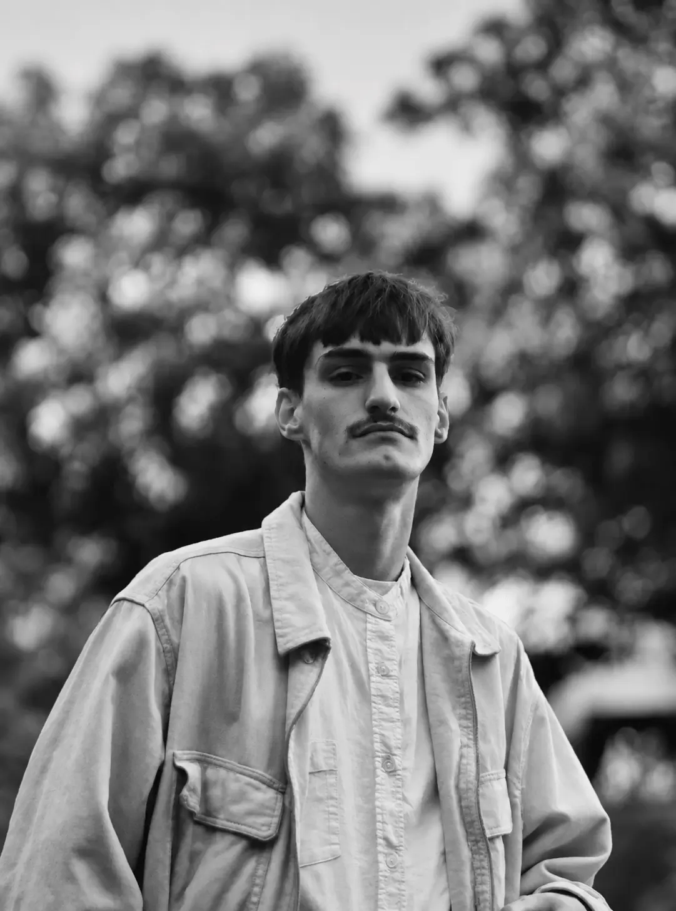
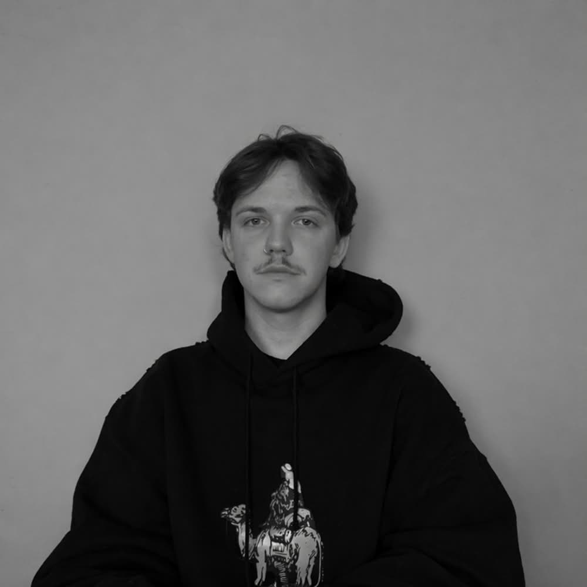
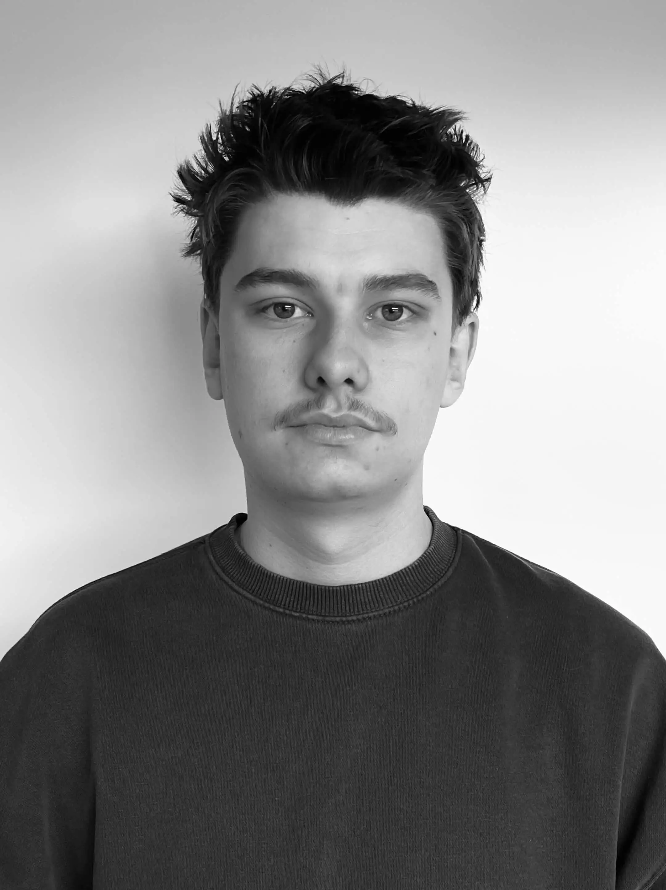

01 / 03
[U—01] DESIGN STUDIO FOR NON-PROFITS IN FLEMISH BRABANT
Good causes. Bold design. Real impact.
We're a design studio in Flemish Brabant helping good causes and non-profits stand out, with graphic design and web design that bring more people in.
Meet your creative partners
01 / OUR REASON
Good shouldn’t
go unnoticed.
You’re making the world better. We make sure the world sees it.
Unform is a design studio for non-profits, associations, changemakers and people who give a damn. From Flemish Brabant, we turn a clear purpose into a distinctive brand identity, a thoughtful website and a story that moves people.
Because more attention should mean more support: more hands on deck, more donations, more lives changed.
02 / PURPOSE IN PRACTICE
A glimpse of what good can look like.
Good grows here: a campaign concept for greener, closer communities
A little action. A bigger future.
03 / WHAT WE BRING
From the first question to the final detail.
Purpose,
meet
possibility.
01 Strategy & story
We sharpen your mission, audience and message, so every touchpoint tells the same strong story.
- Brand positioning
- Messaging & tone of voice
- Creative direction
02 Brand identity & graphic design
Logo, colour, typography and visual language that fit your non-profit and stick in people's minds.
- Visual identity
- Design systems
- Brand guidelines & templates
03 Web design & digital experiences
Clear, accessible websites for non-profits that turn visitors into volunteers, members and donors.
- Web design & development
- User experience
- Accessible digital design
04 Campaigns & action
Graphic design and campaigns for fundraising, awareness and events, online and on the street.
- Campaign concepts
- Art direction & motion
- Print & social toolkits
04 / THE PEOPLE BEHIND THE PURPOSE
Independent by choice. Collaborative by nature.
3
PEOPLE. ONE SHARED BELIEF.
Small team.
All in.
We’re three creative minds who believe good design should do some good.
You work directly with the people doing the thinking and making. As a design studio in Flemish Brabant, we ask questions, challenge assumptions and care about the details as much as the bigger picture. Your cause becomes our cause.

02 / 03
Jamie
Motion & Graphic Designer
01 / CLOSE BY DESIGN
Fewer layers, better conversations.
02 / CURIOUS AT HEART
Listen first, make it matter.
03 / HERE FOR THE GOOD
Shared values, real commitment.
05 / SOMETHING GOOD STARTS HERE
Good people. Good conversations.
Have a cause?
Let’s give it form.
Tell us what you believe in.
We’ll help the world believe in it too.